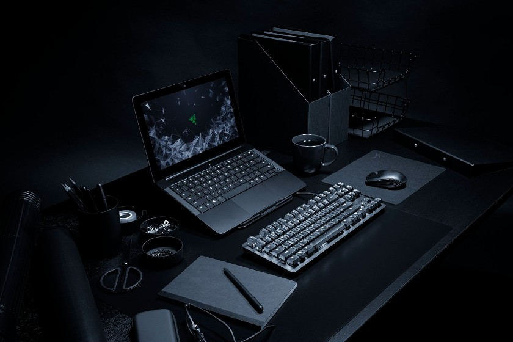

Comparatif des 7 meilleurs claviers pour développeur.
Comparatif publié le 12 novembre 2020.
Vous êtes plutôt clavier méca ou clavier membrane ? Découvrez les
différences et faîtes votre choix grâce à ce guide complet pour vous
aider à choisir votre compagnon de travail.
En effet pour les développeurs, le clavier est un outil important. Que
les choses soit claires, vous n'allez pas devenir un génie du
développement logiciel avec un meilleur clavier. En revanche avoir un
bon clavier vous permettra d'avoir un meilleur confort, moins de
fatigue, et donc au final une expérience développeur améliorée. c'est
exactement la raison pour laquelle un développeur a besoin d'un
clavier fiable et de haute qualité pour offrir la meilleure expérience
possible lors de la programmation. Il n'est pas facile de trouver le
clavier parfait pour répondre à vos besoins, c'est pourquoi nous avons
réalisé une compilation des
7 meilleurs claviers pour développeur, et en
regardant le marché actuel, je pense que la liste deviendra
probablement les meilleurs claviers de programmation pour 2021.
Pourquoi utiliser un bon clavier mécanique quand on est développeur ?
Les programmeurs, les développeurs de logiciels, les professionnels de
l'informatique passent tous beaucoup de temps derrière un ordinateur.
Le temps de saisie réel peut varier selon la profession, le secteur
d'activité et le poste occupé. Personnellement, je peux estimer entre
2 et 4 heures par jour de contact entre le clavier et la main. Cela
inclut tout, du codage à la rédaction de courriels, en passant par le
chat avec mon équipe sur Slack, la rédaction de documents et la
recherche sur le web. En moyenne, cela représente environ 60 à 80
heures par mois pendant lesquelles vos mains appuient sur des touches.
En tenant compte de cela, ne serait-il pas préférable d'assurer une
frappe confortable et efficace ? Comme un écrivain investirait dans un
excellent stylo, ou un artiste dans un bon ensemble de peintures à
l'huile, pourquoi ne pas investir dans un
excellent clavier ? Et dernier point aussi farfelu
que cela puisse paraître, taper sur un beau clavier mécanique peut
être motivant.
En tant que développeur c'est donc élément capital au vue du temps que
vous passez au contact de votre clavier, à vrai dire il y a
certainement peu d'objet avec lesquels vous passez autant de temps.
C'est pourquoi il est important de faire le bon choix.

Pourquoi utiliser un clavier mécanique quand on est développeur ?
Les claviers mécaniques ont 2 avantages indéniable, un confort de
frappe supérieur, une grande durée de vie et des design plus
recherchés.
Les claviers mécaniques ont un confort de frappe exceptionnel.
Vous tapez pendant des heures sur votre clavier au quotidien en tant
que développeur. Il donc capital que cette saisie soit confortable et
agréable.
Cette sensation de clic et de toucher satisfaisant ne peut tout
simplement pas être ressentie sur les claviers à membrane normaux.
Cela rend la frappe amusante et addictive. Il y a quelque chose
d'étrangement fantastique à taper sur une touche purement mécanique et
à entendre et sentir simultanément le mécanisme fonctionner ensemble.
Tellement satisfaisant que certains en ont fait des compilations de
son de clavier sur vinyl. Sans aller dans ces extrêmes on comprend
très bien le plaisir que l'on peut ressentir à développer avec un
clavier mécanique
Les claviers mécaniques ont une meilleure durée de vie.
Bien qu'il y ait beaucoup plus de composants mobiles, les claviers
mécaniques de qualité, avec des switches de bonne qualité de
fabrication et de bonne réputation, peuvent durer toute une vie s'ils
sont correctement entretenus. Les interrupteurs fabriqués par Cherry
sont garantis pour 50 millions de frappes. Il n'y a vraiment aucune
comparaison avec un mince film de caoutchouc formé sur une carte de
circuit imprimé.
Pourquoi utiliser un clavier à membrane quand on est développeur ?
Les claviers à membrane sont devenus de plus en plus populaires ces
dernières années. Contrairement aux claviers "mécaniques"
traditionnels, leurs touches ne sont pas des pièces séparées, mais
sont plutôt constituées de coussinets de pression avec des lettres et
des symboles imprimés sur une surface souple.
Ainsi, lorsque l'utilisateur appuie sur une touche à membrane, la
couche sous-jacente entre en contact ; ce qui permet d'enregistrer la
pression de la touche et de l'envoyer à l'ordinateur. À moins que vous
ne soyez familier avec les claviers à membrane, vous vous demandez
peut-être pourquoi ils sont si populaires sur le lieu de travail. Les
entreprises de toutes formes et de toutes tailles - et dans différents
secteurs - les utilisent quotidiennement. Alors, pourquoi les claviers
à membrane sont-ils le choix privilégié des chefs d'entreprise et des
professionnels ?
Un clavier à membrane est plus silencieux.
Pour celles et ceux qui recherchent une expérience totalement
silencieuse, pensez aux claviers à membrane. Les claviers à membrane
sont plus doux et plus silencieux. Ils peuvent toutefois nécessiter
plus de force sur les touches avant que l'ordinateur n'enregistre
l'entrée.
Un clavier à membrane est moins cher.
Bien que les prix des claviers mécaniques aient considérablement
baissé ces dernières années. Les claviers à membrane sont aussi
particulièrement appréciées parce qu'ils restent bien moins cher que
leurs homologues mécaniques.
Un autre style de frappe.
En posant la question sur Reddit pour savoir ce qu'utilisez les
développeurs de la plateforme. J'ai été surpris de voir que beaucoup
ont répondu "les vieux claviers logitech". C'est pourquoi l'un de ces
claviers est testé ici.
C'est souvent les premiers claviers avec lesquels nous sommes
confrontés, des claviers auxquels nous sommes habitués.
Il est indéniable que les claviers à membrane sont confortables à
utiliser, en partie grâce à leur conception ergonomique. Les claviers
mécaniques ne sont pas nécessairement difficiles ou douloureux à
utiliser, mais ils n'ont pas la forme et la conception ergonomique de
leur homologue à membrane.
Les meilleurs claviers Mécaniques
pour développeurs.
Comme je l'ai dit plus haut, les claviers sont des outils très
important pour les développeurs. La plupart du temps, les yeux des
développeurs fixent le ou les écrans pendant qu'ils tapent avec
leurs doigts, de sorte que leurs doigts sont en contact direct avec
leur clavier.
Il est nécessaire pour un bon développeur de trouver un clavier qui
lui convienne. Un bon clavier, sans aucun doute, assurera une
meilleure expérience de développement, et par conséquent augmentera
ses performances. En revanche, un mauvais clavier rendra les choses
difficiles, frustrantes, inconfortables, insupportables pour un
développeur, et réduira certainement la qualité des performances.
Sans plus attendre découvrons la liste des meilleurs claviers pour
développer.
On démarre avec le clavier le plus compact par sa
taille et mini par son pirx
Avec son prix si bas, le Drevo Calibur V2 est un clavier
impressionnant, hautement personnalisable en taille 60 % et doté
de nombreuses fonctions intéressantes. Sa taille compacte et sa
polyvalence font du Drevo Calibur V2 un choix de clavier idéal
pour les développeurs avec un petit budget mais un gros besoin de
mobilité.
Ce clavier est disponible avec plusieurs configuration de switches
mécaniques. Pour le développement nous recommendons vivement la
version avec les Cherry MX Brown réputés plus silencieux. Vous
pouvez également faire le choix des Otomu brown mais ceci sont
nettement plus "clicky" pour ne pas dire bruyant. Si vous avez
l'habitude de coder avec un casque sur les oreilles cela ne
devrait pas vous déranger ou dans un environnement de travail déjà
bruyant cela ne devrait pas plus vous déranger.
On ne vous le cache pas nous avons également craqué pour son
design sobre et moderne, mais surtout sa solide conception,
compact nous l'avons dit qui vous fera gagner une place non
négligeable surtout si vous évoluez sur un petit bureau.
Il est a noté également que ce clavier est fourni avec plusieurs
accessoires non négligeables :
Un extracteur de touches - Il est toujours
agréable d'avoir un extracteur de touches inclus avec un clavier
que vous recevez. Celui fourni avec le Drevo Calibur V2 est fait
de fil de fer, de sorte qu'il n'endommagera pas les capuchons de
touches lorsque vous les enlèverez.
Pieds de clavier magnétiques - Les deux pieds
magnétiques qui permettent d'augmenter la hauteur ou l'angle
d'inclinaison du clavier sont un bon complément. Les pieds ont
des points en caoutchouc sur l'arrière qui empêchent le clavier
de glisser sur le bureau.
Une couverture anti poussière - Pour prendre
grand soin de votre clavier lorsque vous ne l'utilisez pas.
Câble USB-C
On aime
Clavier compact et solide, idéal en mobilité.
Petit par sa taille, petit par son prix.
Un clavier pour développeur compatible Mac/Linux/Windows.
Connexion avec câble USB-C détachable.
Cherry MX Brown disponible, idéal pour les développeurs.
Généreux en accessoire.
On aime moins
Pas de pavé numérique.
Ce clavier méca est pour vous.
Si en tant que développeur vous recherchez un clavier portable
compact à petit prix mais qui ne va pas pour autant rogner sur la
qualité ce petit clavier mécanique est fait pour vous.
Equipé en Cherry MX Brown il saura rester à niveau sonore tout à
fait acceptable et il vous assurera de longues heures de
développement confortables.
Le meilleur clavier pour la développement que
nous avons testé est le Razer BlackWidow Elite. Notre appareil est
doté des interrupteurs mécaniques Orange exclusifs à Razer, mais
vous pouvez l'obtenir avec des interrupteurs à clic ou linéaires.
Les interrupteurs Orange ont une légère bosse tactile qui
ressemble beaucoup aux Cherry MX Browns, et ils offrent une
excellente expérience de frappe qui ne vous fatiguera pas.
Si vous travaillez de longues heures et avez besoin d'un soutien
supplémentaire pour vos poignets, il est fourni avec un joli
repose-poignets en peluche qui s'attache magnétiquement. Il est
également doté de commandes dédiées aux médias pour régler le
volume, la lecture, la pause ou le saut de piste. Il est
compatible avec le logiciel Synapse 3 de Razer, qui vous permet de
définir des macros, de reprogrammer des touches ou de
personnaliser son rétroéclairage RVB complet. Les profils peuvent
être sauvegardés dans le logiciel ou à l'aide de la mémoire
intégrée du clavier si vous devez passer à un autre ordinateur.
Malheureusement, Synapse 3 n'est disponible que pour Windows, et
non pour MacOS ou Linux. De plus, il dispose d'un port USB
supplémentaire pour vous permettre de connecter un autre
périphérique ou de charger un appareil mobile, et d'une prise
casque de 3,5 mm pour plus de commodité. Dans l'ensemble, il a été
conçu pour le jeu, mais ses performances et ses caractéristiques
devraient satisfaire la plupart des développeurs.
On aime
Construction ultra solide.
Repose poignet très confortable et amovible.
Les Razer green switches idéal pour les développeurs.
Excellent pour le jeu également
Touches médias dédiées.
On aime moins
Le port USB supplémentaire qui n'est pas 3.0.
Ce clavier méca est pour vous.
C'est le clavier que j'utilise au quotidien. Le Razer BlackWidow
Elite est un excellent clavier. Il est principalement conçu pour
le jeu grâce à sa faible distance de pré-course avant
l'actionnement et à sa conception générale. Il dispose d'un
rétro-éclairage RGB complet et est très bien construit. Il est
disponible en trois styles de switches différents, alors n'oubliez
pas de vérifier les variantes et de choisir celle qui convient le
mieux à vos besoins.
Mais ce qui fait que le Razer BlackWidow Elite est un excellent
clavier pour les développeurs c'est avant tout sa
qualité de frappe excellente. Il est confortable
pour taper pendant de longues périodes. C'est un clavier très
polyvalent qui peut être utilisé sur plusieurs OS et les
programmeurs apprécieront la possibilité de programmer des macros
pour pouvoir par exemple lancer VSCode et une instance du Terminal
Logitech est un fabricant reconnu de clavier depuis de nombreuses
années, ce clavier n'y fait pas défaut. Initialiement prévu pour
joueur, c'est également un excellent clavier pour développeur. Si
certaines personnes apprécieront la longue course des touches
mécaniques et le style audacieux (pour ne pas dire excentrique) de
la plupart des claviers de jeu, certaines personnes vont préférer
quelque chose de plus discret, avec une sensation de frappe plus
proche de celle qu'elles trouveraient sur leur ordinateur
portable.
Le G915 Lightspeed de Logitech offre le meilleur des deux mondes.
Il s'agit d'un clavier mécanique à profil bas, donc avec une
pression plus courte, mais qui reste plus confortable et plus
satisfaisant que les switches à ciseaux de votre ordinateur
portable. Son boîtier élégant et léger a un look professionnel -
sans éclairage RVB - qui peut s'intégrer aussi bien dans un open
space de bureau que dans une battle station.
Si il rentre dans cette sélection c'est bien parce que c'est le
meilleur clavier sans fil dans la catégorie des claviers pour
développeurs. Avec Son Wi-fi cadencé à 2.4ghz et son Bluetooth
oubliez la latence aussi bien pour coder mais aussi si vous
souhaitez un clavier polyvalent pour le jeu. Vous pourrez donc
dire adieu au câble sur votre bureau.
On aime
Les amateurs des touches low profile seront ravis.
Sans fil mais 0 lag.
Sobre et élégant, parfait pour un développeur.
Excellente durée de vie de la batterie.
La roulette pour le volume très appréciable.
Boitier en aluminium.
Très silencieux.
On aime moins
Pour ceux qui en ont les moyens.
Ce clavier méca est pour vous.
Comme nous le montre la liste ci-dessus les qualités de ce clavier
ne manquent pas. Il est champion en double catégorie : clavier low
profile et clavier sans fil. Avec son confort de frappe et son
silence il est un partenaire idéal pour un développeur qui
recherche un clavier qui coche toutes les cases. Si vous avez les
moyens il n'y a pas de concurrence dans sa catégorie.
Le meilleur clavier pour le développement dans sa catégorie est le
Razer BlackWidow Lite. C'est un clavier mécanique avec
rétro-éclairage blanc, idéale pour les sessions de programmation
la nuit ou dans des salles obscures. Il est disponible en noir ou
en blanc.
Il est équipé d'interrupteurs Razer Orange exclusifs, qui ont une
faible distance de pré-course et offrent un bon retour tactile,
comme les interrupteurs Cherry MX Brown. Il est livré avec des
joints toriques que vous pouvez ajouter pour réduire le bruit, ce
qui le rend très silencieux si vous travaillez
dans un environnement de bureau. La qualité générale de la frappe
est excellente, mais sans repose-poignet et en raison du profil
plus élevé des touches, la frappe pourrait devenir fatigante. Il
n'y a pas de touches macro dédiées, mais vous pouvez toujours
définir des macros sur n'importe quelle touche grâce au logiciel
Razer Synapse, qui n'est disponible hélas que sous Windows.
Malheureusement, même s'il est entièrement compatible avec Linux,
le logiciel ne l'est pas et il n'y a pas de mémoire embarquée,
donc vous ne pouvez pas l'utiliser avec des macros sur ce système
d'exploitation. Quelques touches ne fonctionnent pas non plus sur
les macros, mais elles sont entièrement compatibles avec Windows.
Dans l'ensemble, c'est un clavier qui ne vous coûtera pas
beaucoup, et il ravira la plupart des programmeurs devraient s'en
contenter.
On aime
L'excellence pour moins de 100 euros.
La qualité des switches Razer.
Particulièrement silencieux.
Fournis avec des stabilisateurs.
Design très réussi.
On aime moins
Le logiciel Razer Synapse disponible uniquement sur Windows.
Ce clavier méca est pour vous.
Razer fait encore fort même dans sa version lite. Ce clavier est
fait pour vous si vous recherchez un clavier avec un confort de
frappe exceptionnel mais surtout très silencieux.
On regrettera seulement que le logiciel Razer Synapse est
disponible uniquement sur Windows.
Le Logitech G413 est un excellent clavier mécanique d'entrée de
gamme pour ceux qui souhaitent améliorer leur expérience de
développeur au quotidien. Son prix agressif le rend moins cher que
les claviers similaires de la concurrence, tout en offrant un
ensemble de fonctionnalités solides et le même retour tactile que
les offres haut de gamme de Logitech. Vous ne serez pas surpris
par les fonctionnalités du G413, bien qu'il constitue un point
d'entrée décent dans le monde des claviers mécaniques de jeu à un
prix plus abordable.
Il est équipé d'interrupteurs Razer Orange exclusifs, qui ont une
faible distance de pré-course et offrent un bon retour tactile,
comme les interrupteurs Cherry MX Brown. Il est livré avec des
joints toriques que vous pouvez ajouter pour réduire le bruit, ce
qui le rend très silencieux si vous travaillez
dans un environnement de bureau. La qualité générale de la frappe
est excellente, mais sans repose-poignet et en raison du profil
plus élevé des touches, la frappe pourrait devenir fatigante. Il
n'y a pas de touches macro dédiées, mais vous pouvez toujours
définir des macros sur n'importe quelle touche grâce au logiciel
Razer Synapse, qui n'est disponible hélas que sous Windows.
Malheureusement, même s'il est entièrement compatible avec Linux,
le logiciel ne l'est pas et il n'y a pas de mémoire embarquée,
donc vous ne pouvez pas l'utiliser avec des macros sur ce système
d'exploitation. Quelques touches ne fonctionnent pas non plus sur
les macros, mais elles sont entièrement compatibles avec Windows.
Dans l'ensemble, c'est un clavier qui ne vous coûtera pas
beaucoup, et il ravira la plupart des programmeurs devraient s'en
contenter.
On aime
Mini prix.
Le port USB supplémentaire.
Très bonne qualité de frappe.
Compact malgré le pavé numérique.
On aime moins
Port USB supplémentaire en 2.0.
Ce clavier méca est pour vous.
Si vous recherchez un clavier entrée de gamme pour développer, ce
clavier peut-être un très bon choix. Design réussi, confort de
frappe, pas de fioritures, juste l'essentiel et ce clavier le fait
très bien.
Le Ninja Tenkeyless est une version compacte du clavier Ninja
câblé Majestouch-2 de Filco, qui omet le pavé numérique (connu des
aficionados sous le nom de "tenkey" car il représente les chiffres
de 0 à 9). Les étiquettes des touches sont imprimées sur les faces
avant et non sur le dessus, de sorte qu'elles ne vous distraient
pas et ne s'effacent pas. En dessous se trouvent les switches
Cherry MX standard, en l'occurrence leur déclinaison marron, qui
vous donne une petite bosse lorsque la touche est enfoncée, est
son réputé pour être particulièrement silencieux. Tout cela permet
de taper confortablement sans déranger les gens dans la même
pièce. Vous pouvez également opter pour des switches bleues si
vous souhaitez une sensation de clic plus importantes, ou rouges
pour une action plus subtil. Si vous souhaitez plus d'informations
sur les différents types de switches vous pouvez consulter notre
guide d'achat
Les claviers Filco sont réputés pour leur fantastique qualité de
fabrication. Le clavier pèse près d'un kilo et demi et est
construit comme un tank. On ne sent au jeu sur la partie arrière.
L'esthétique générale de ce clavier est très propre et simple. La
finition n'est pas sujette aux empreintes digitales et
l'impression des étiquettes des touches sur le côté des touches
(sur la version ninja) donne au clavier un aspect minimaliste tout
en permettant de voir facilement quelles touches se trouvent à
quel endroit.
Filco utilisent des stabilisateurs Costar, qui sont généralement
préférables pour les personnes qui préfèrent un toucher "vif" à
leur clavier.
On aime
Sobritété et élégance du design.
Un clavier très solide.
Un choix varié de switches.
Qualité du confort de frappe
Les stabilisateurs Costar.
On aime moins
Pas de pavé numérique.
Ce clavier méca est pour vous.
Le Filco impressionne par la qualité de sa construction et son
design sobre et raffiné. Il sera parfait sur un bureau
minimaliste.
Ce n'est pas tout le clavier méca Filco dispose d'un grand confort
de frappe et vous pourrez compter sur lui pour vos longues
sessions de code.
En résumé vous souhaitez un clavier compact, élégant, et de très
grande qualité pour développer, le Filco est clairement un choix à
prendre en considération
Le clavier le plus confortable. Le clavier
Microsoft Sculpt Ergonomic est un excellent clavier de bureau
conçu pour les développeurs sujets aux microtraumatismes répétés.
Son clavier divisé en deux et son inclinaison inversée favorisent
une position de frappe plus naturelle pour soulager la pression
sur les poignets. Si il faut un peu de temps pour s'habituer à
taper sur ce clavier. Si vous avez tendance à passer toute la
journée devant un ordinateur, ou que vous avez les poignets ou les
doigts un peu fragile ce clavier peut vous aider à prévenir toute
blessure future.
On reconnait également le savoir faire dans la création de
périphérique. Depuis 30 ans il réalise des périphériques de
qualité et celui-ci ne fait pas défaut.
On aime
Un clavier ergonomique très confortable.
Le pavé numérique séparé.
Un clavier pour développeur très silencieux.
Qualité de fabrication Microsoft.
On aime moins
Pas de système RGB.
Ce clavier ergonomique est pour vous.
Si vous recherchez un pure clavier pour coder, le Sculpt de
Microsoft est idéal pour une utilisation bureautique. Sa
conception ergonomique vous permet de taper toute la journée et ne
devrait pas causer de fatigue. Il faut un certain temps pour
s'habituer au clavier divisé en deux mais c'est un vrai plaisir au
final. Le bruit de frappe est très faible et ne devrait pas gêner
vos collègues.La qualité de fabrication du clavier est vraiment
bonne.
Il faut savoir que ce clavier est également disponible en
version filaire
pour 30 euros de moins.